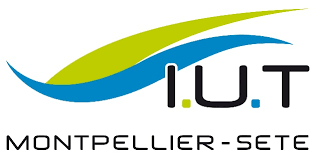

Anglais
Anglais
 Japonais
Japonais
🚀 2028/... - Travailler dans le spatial
Mon objectif est de rejoindre une entreprise du secteur aérospatial pour contribuer au développement des technologies spatiales et des systèmes informatiques qui soutiennent les missions spatiales.
🎓 2026/2028 - Master en Informatique
Poursuite d'études en Master spécialisé en ingénierie des systèmes informatiques complexes, avec une orientation vers l'intelligence artificielle et les systèmes embarqués.
🚀 2025 - Stage au CSUM
Stage au Centre Spatial Universitaire de Montpellier, travaillant sur des logiciels d'analyse de données pour les nanosatellites et les systèmes de communication spatiale.
 🎓 2023/2026 - IUT informatique
Formation en informatique à l'IUT de Montpellier, avec une spécialisation en développement logiciel et gestion de projets. Acquisition des compétences fondamentales en programmation, bases de données, et méthodes agiles.
🎓 2020/2023 - Bacalauréat général
Lycée Jean Jaurès, obtention du baccalauréat général avec spécialités Mathématiques et Informatique. Premier contact avec la programmation et développement d'un intérêt pour les sciences spatiales.